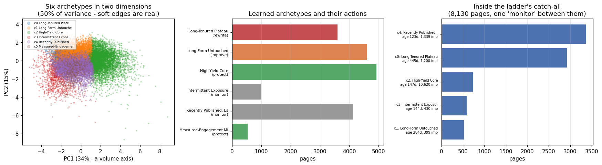
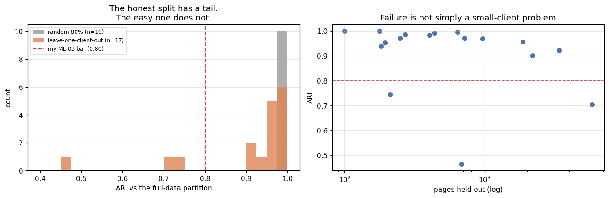
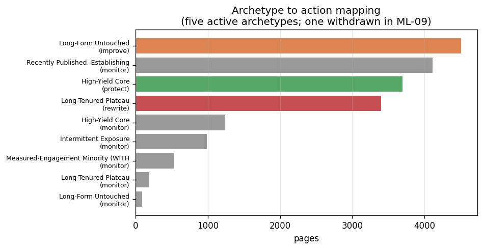
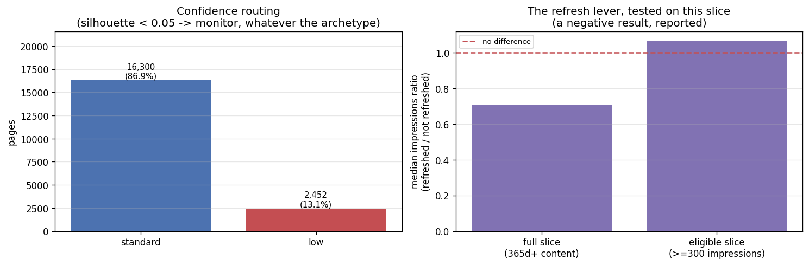

Abstract
Content published into a client's site ranks, then decays quietly, and at inventory scale nobody notices until late. FlyRank's production answer is a set of hand-written flags, whose structural limit is that everything no threshold categorises lands in one bucket. So: which pages should a content team treat the same way? Using the FlyRank ML Internship dataset (a pseudonymized 30,000-row content snapshot, with the data contract validated against a 78.8-million-row production search warehouse), I asked what behavioural archetypes exist across a content inventory, rather than which individual page to fix first. K-Means (k = 6) on nine observed search and content signals produced six groups that reproduce almost perfectly across random seeds (ARI 0.998) and split a hand-written rule's 8,130-page catch-all bucket into five measurably different populations, including 735 pages the rule labelled "steady low" that carry a median 10,620 impressions at 0.42% CTR. Five of those six archetypes survived a robustness test; the sixth did not, and is withdrawn here. Under leave-one-client-out across 17 clients the partition transferred with mean ARI 0.909 but a worst case of 0.465, so the result is offered as decision-support for prioritising human review: a ranked queue with reason codes, an explicit low-confidence bucket, and no automated action of any kind.
1. Introduction: the decision this supports
A content lead with 18,000 pages does not make 18,000 decisions. At twenty reviewed pages a week, one pass through this inventory would take eighteen years. What they actually do is set a handful of policies (protect this kind of page, rewrite that kind, leave those alone) and apply them.
So the useful question is not "which page is worst?" It is "what kinds of page are there, and what does each kind deserve?" That is a grouping problem, and it is the one this paper takes on.
The obvious approach is a hand-written rule, and I built one first so I would have something honest to
beat: a five-rung ladder keyed on volume, staleness, engagement and consistency. It works. It also puts
43% of the entire inventory into a single catch-all bucket defined by what it is not, with one
recommendation, monitor, shared between 8,130 pages. That bucket is the tension this paper
resolves.
Where this problem comes from
This is not a hypothetical inventory. FlyRank runs content as infrastructure: it researches and writes content, publishes it into a client's site, then watches search data and optimizes. The whole cycle is run by software rather than by people working through a list. That model has a specific failure mode. Content that gets found in search ranks, and then decays quietly: rankings slip, clicks drift down, and nobody notices until a quarterly report says so. At the scale FlyRank operates, noticing late is the default outcome, because there is no human reading 18,000 pages.
The product's existing answer is a set of hand-written flags: a health score, quick-win tags, needs-attention markers. Thresholds picked by a person, if-this-then-that. They work, and they run in production today. The honest description of their limit is that a rule keyed on a handful of thresholds has to put everything it cannot categorise somewhere, and that somewhere gets large. The five-rung ladder I built as this paper's baseline is a faithful stand-in for that class of rule, and it reproduces exactly that behaviour: 43% of the inventory in one bucket, holding pages whose only shared property is that no threshold fired on them.
So the case this paper makes is narrow and concrete. Splitting that catch-all into five measurably different populations is not an academic result. It is the difference between one policy applied to 8,130 pages and five policies applied to the groups that actually differ. The 735 pages the ladder called "steady low" that turn out to carry a median 10,620 impressions at 0.42% CTR are, in product terms, pages the current flags tell a team to ignore while they are the highest-exposure pages in that bucket. That is the decision this work changes.
Two constraints come from the same source and are honoured throughout. Product flags are outputs, never inputs. A health score encodes a decision someone already made, so using it as a feature would produce a model that has learned the rule it is supposed to be tested against. And the claim language stays observed / measured / directional / decision-support, which is why section 5 is the longest section here and why nothing in section 6 is automated.
2. Data
Source. The FlyRank ML Internship dataset. Two releases were used, for different purposes:
| Release | Used for | Scale |
|---|---|---|
data/raw/content_refresh_anonymized.csv |
the archetype analysis in this paper | 30,000 rows × 44 cols 32 clients |
FlyRank/internship-warehouse
fact_content_daily_performance, month=2026-03 |
validating the data contract, window discipline and availability rules | 9,841,378 rows in March 331,437 items, 55 clients (78.8M rows total) |
Grain. One row = one pseudonymized content item (a page) belonging to one pseudonymized client,
summarised over a trailing 90-day window. Verified: 18,752 unique content_id values in 18,752
rows.
What I excluded, and why.
| Excluded | Rows | Reason |
|---|---|---|
| Pages under 300 impressions in the window | see total | Click-through rate on a low-volume page is noise. 300 is the dataset's own documented
moderate impression-tier boundary. |
Pages with avg_position = 0 | 1,205 | Documented as "no position data", not rank zero. |
| Total removed (both filters) | 11,248 of 30,000 (37%), median 31 impressions each | |
| All GA4 engagement columns | columns | Only 4.2% of warehouse rows in March pass ga4_data_available IS TRUE. The rest
are zero-filled, not zero-measured. In a clustering study, filler zeros do not blur
a boundary; they draw one. |
trend_pct, trend_direction | columns | Label sources for the dataset's shipped pipeline. Imposing them would change the question. |
sessions_ai | columns | 30,177 rows carry AI sessions against 78.8M daily rows: too sparse to shape a group. |
Public safety. Every identifier in this study is a pseudonym (content_…,
client_…). No client name, domain, URL, page title or raw search query exists in the release
or appears anywhere in this paper. All figures are aggregates.
3. Methodology
Task type
Clustering, unsupervised. There is no observed outcome I am trying to reproduce, and no ground truth to be scored against. "Archetype" is a construct imposed to make policy tractable, not a hidden property of a page waiting to be discovered. That framing is stated because it governs every claim below.
Features: nine observed signals
log(impressions) log(clicks) CTR average position log(sessions) engagement rate impression consistency (days with impressions ÷ 90) content age days since last update
All standardised. Content metadata (word count, character count, search volume, competition, CPC, content type, intent) was deliberately held out of the feature set and used only to validate the clusters from outside.
The baseline this had to beat
A hand-written five-rung ladder, frozen before any modelling: CHAMPION (≥3,000 impressions
and position ≤10) → STALE_VISIBLE (≥90 days since update, ≥500 impressions) →
ENGAGED_NICHE (engagement ≥10%) → INTERMITTENT (<45 of 90 days with
impressions) → STEADY_LOW (everything else). Its rung counts are asserted to reproduce
exactly at the top of every downstream notebook, so the comparison cannot silently drift.
Validation design: three tests, in ascending order of honesty
| Test | What it catches | Result |
|---|---|---|
| Seed stability (5 seeds) | "the algorithm made this up" | ARI 0.998 |
| Subsample stability (10 × 80%) | "it depends which pages I had" | ARI 0.990 |
| Leave-one-client-out (17 clients) | "does it transfer to a client never seen?" | mean 0.909 worst 0.465 |
Leakage checks
Unsupervised work cannot leak a future outcome, because there is no target window. The equivalent failure is encoding the answer in the input, and three checks were run:
- No pre-computed grouping in the features. Not the shipped label sources, not product decision
flags, not my own hand-written ladder, not
client_id. - Variance concentration. PC1 carries 33.9% and is a volume axis: dominant, not total.
- Feature-removal. Re-run without each defining feature and see which groups survive. This is the check that cost me an archetype.
The trap, run deliberately. In the data-contract notebook I added my own hand-written ladder to the feature set on purpose. Agreement with that ladder jumped from ARI 0.229 to 0.453 while silhouette barely moved: the score that looked like validation was the input coming back out. The silhouette would not have warned me; only the agreement metric did.
4. Results
Method choice: the simplest option won
| Method (k = 6, identical features and scaling) | Silhouette | Smallest group |
|---|---|---|
| K-Means | 0.221 | 537 |
| Gaussian Mixture | 0.116 | 1,241 |
| Agglomerative (6,000-page subsample) | 0.141 | 225 |
Gaussian Mixture is the more expressive model: elliptical, overlapping clusters where K-Means forces spheres. It scored half the silhouette. Complexity earned nothing, so it was not shipped.
What the clustering found that the rule could not
Agreement between the learned partition and the hand-written ladder is ARI 0.288. They overlap where the ladder has a sharp idea and diverge where it is vague. Its catch-all bucket splits like this:
Group inside the ladder's STEADY_LOW | Pages | Median impressions | Median CTR | Median age |
|---|---|---|---|---|
| Recently published, establishing | 3,365 | 1,339 | 0.15% | 123 d |
| Long-tenured, settled low | 2,920 | 1,200 | 0.09% | 445 d |
| High-yield, mis-bucketed | 735 | 10,620 | 0.42% | 147 d |
| Intermittent exposure | 588 | 430 | 0.00% | 144 d |
Two findings sit in that table. First, a four-month-old page still establishing itself and a year-and-a-half-old page that settled long ago are the same row to the ladder at nearly identical volume and position, separated by a 3.6× difference in age that no rung asked about. Second, 735 pages carrying a median 10,620 impressions at 0.42% CTR were labelled "steady low", having failed the champion rung only because their median position was 14.4 rather than ≤10.

STEADY_LOW bucket, opened.The validation result that matters most

The archetype I withdrew
One of the six groups does not survive its own robustness test. Removing
engagement_rate from the feature set leaves most of the structure intact (ARI 0.783,
silhouette actually improves from 0.221 to 0.233), but the "engagement" group's 537 pages scatter, with
the largest single destination holding only 34% of them, and no cluster in the reduced run
isolates engagement at all.
Combined with the measurement finding (the share of pages with any recorded engagement climbs 21% → 62% → 90% as impression volume rises), that group is a feature artefact, not a population. It is withdrawn. Reproducible across random seeds is not the same as reproducible across feature choices.
5. Limitations and honest framing
What this study can say: that six behavioural groups reproduce across seeds on this slice, that five survive feature removal, that they separate on variables the algorithm never saw, and that they split a hand-written bucket the rule treats as uniform.
What it cannot say, and will not:
- These are not natural kinds. k = 6 is a choice from a silhouette curve that is nearly flat between k = 5 and k = 8. A different k gives different groups. Gaussian Mixture on identical inputs finds a substantially different partition (ARI 0.288 against K-Means), so these are the structure K-Means finds, not the structure.
- Separation is weak. Silhouette 0.221. These are regions of a continuum with soft edges, not islands. 11.2% of pages sit within 0.05 of a boundary; one page's assigned archetype and its runner-up were 0.1% apart in distance, carrying opposite recommended actions.
- Portability is directional, not reliable. Leave-one-client-out: 14 of 17 clients above 0.80, 3 below, worst 0.465.
- This is not semantic clustering. The release contains no article text: no titles, no bodies, no queries. These are behavioural metrics and content metadata. Calling it semantic would describe an analysis that was not done.
- Nothing here is causal or predictive. One 90-day window, no intervention, no control group. A cluster describes how a page behaved; it does not say what it will do, and it never says that an action will work.
- No claim about any search engine's ranking system is made or implied.
- Two archetypes are roughly half a single client each (53% and 38% top-client share). Those should be read as house styles common enough to form a group, not universal content types.
- One window is a snapshot, not a trajectory. A plateau and a fresh start look identical from inside 90 days. Of the clients in the warehouse frame, only 3 had 12+ months of history before the observation window.
A negative result, reported. The published FlyRank research paper's most dramatic finding is that 365+ day content refreshed within 30 days shows 57× more impressions. I tested that comparison's shape on my own slice and could not reproduce its direction: refreshed old pages showed 0.70× the median impressions of untouched ones on the full slice, and 1.06× (flat) inside my eligible population.
That is not evidence the published finding is wrong. It is a different dataset, and the decisive detail is population: that paper's un-refreshed baseline sits at 71 median impressions, and my visibility filter removes 11,248 pages whose median is 31. The contrast is anchored on precisely the near-invisible tail this study excludes by design. The honest conclusion is narrow (refresh recency is not a priority signal for a visible-content playbook), and I would have got it wrong by importing the headline instead of testing it.
6. Ranked recommendations
The deliverable is a ranked review queue: one row per page, one reason code, one suggested action, and a confidence label. Five archetypes carry an action; the withdrawn one is shown as withdrawn.
| Archetype | Pages | Action | Why |
|---|---|---|---|
| High-Yield Core | 4,924 | protect | 13,478 median impressions, 0.36% CTR, position 7.4. The risk here is breaking it. |
| Long-Form Untouched | 4,598 | improve | 4,428 median words, 104 days since update, real exposure. An editorial handle exists. |
| Long-Tenured Plateau | 3,595 | rewrite | 445 median days old at 0.10% CTR. It has had its chance at this shape. |
| Recently Published, Establishing | 4,113 | monitor | Youngest cohort at ordinary volume. Ask again in 90 days. |
| Intermittent Exposure | 985 | monitor | Exposure on ~60% of days. Nothing is judgeable until it steadies. |
| Measured-Engagement Minority | 537 | withdrawn | Does not survive removing engagement_rate. Routed to monitor. |


monitor regardless of which archetype they landed in. Right: the refresh lever, tested
and not found. Both ratios sit at or below "no difference".What must never be automated
- Deleting, unpublishing or redirecting any page. Cluster membership describes 90 days of
behaviour. It is not evidence a page has no value.
pruneis absent from the vocabulary entirely. - Rewriting content without a human reading it. The model has never seen the words on the page.
- Acting on a low-confidence row. Opposite actions have been separated by 0.1% of distance.
- Applying the archetypes to an unchecked new client. Leave-one-client-out ranged from 0.465 to 1.000.
- Publishing per-page rows externally. Aggregates are public-safe; rows are not.
The meta-rule: this playbook allocates attention, which is cheap to reallocate. Any decision that is expensive to undo needs a different input.
Monitoring, if anyone runs this
Six lightweight triggers, all checkable by hand: archetype mix shifting more than 10 points; the low-confidence share passing 20%; reviewers disagreeing with the archetype on more than 1 in 4 pages they open (the cheapest and strongest signal available); a new client onboarding; the 90-day window ageing past 30 days; and GA4 coverage improving enough to re-test the withdrawn archetype.
7. Reproducibility
Every number on this page was produced by an executed notebook committed to the repository, and traces to a metrics JSON stored alongside it. Seed 42 throughout; scikit-learn 1.8.0.
| Stage | Notebook | Receipt |
|---|---|---|
| Question and lane | w01_research_question | none |
| Task framing and metrics | w02_ml_task_framing | none |
| Data contract (warehouse) | w03_data_contract | none |
| Baseline ladder | w04_baseline_score | baseline_metrics.json |
| Clustering vs baseline | w05_model | model_metrics.json |
| Validation audit | w06_validation_audit | validation_metrics.json |
| Action playbook | w07_action_playbook | playbook_metrics.json |
To rerun: clone the repository and open any notebook in Colab via its badge,
or run locally with pip install -r requirements.txt. The starter CSV ships in the repo;
the warehouse notebook needs a free Hugging Face read token for the gated release. Every notebook
re-derives its inputs from scratch and asserts that the frozen upstream numbers still reproduce. If the
data drifts, the notebook fails loudly rather than reporting a quietly different result.
8. Acknowledgments and data credit
Built on the FlyRank ML Internship dataset (flyrank.ai).
The pseudonymized starter slice and the gated warehouse release
(FlyRank/internship-warehouse, 78,835,655 daily rows across 104 clients, 2025-01-27 to
2026-06-30) were provided by FlyRank for the internship. All identifiers were pseudonymized by FlyRank
before release; no raw client names, domains, URLs, titles or search queries were ever accessible to this
analysis.
Thanks to the internship team for a curriculum that made the baseline mandatory before the model and the validation audit mandatory before the write-up. Both of those orderings changed what this paper says. The methodology questions in section 5 are offered in that spirit. The published FlyRank paper discloses its evidence standard, its health-score composition and its limitations openly, which is exactly what made it possible to ask a precise question of it.